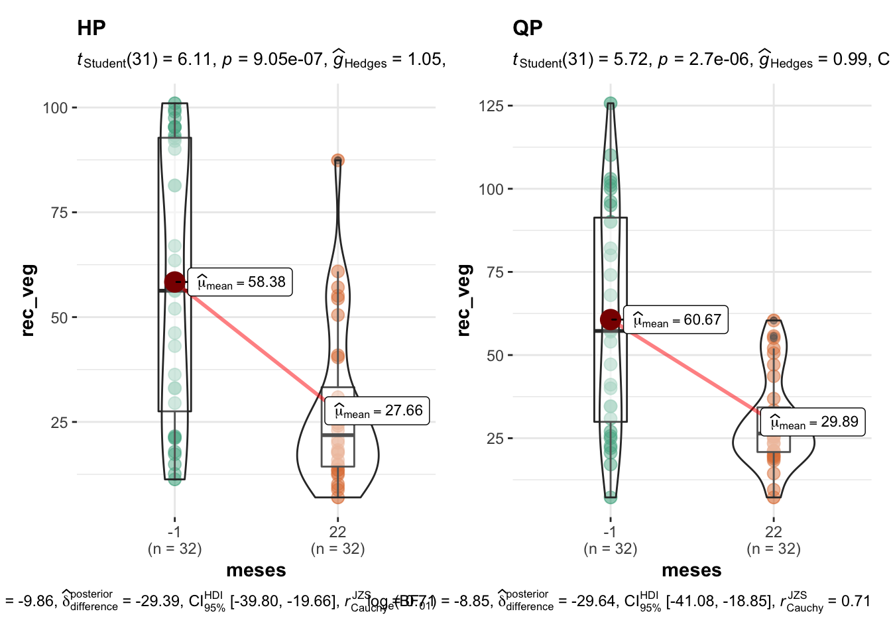
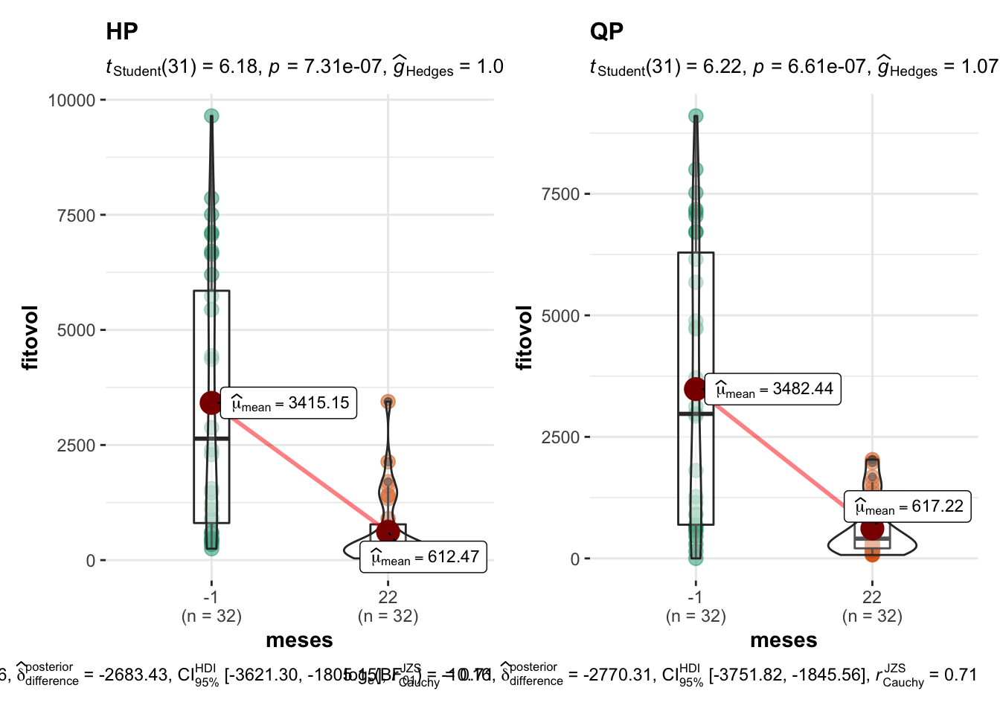

temporal_analysis
ajpelu
2021-10-07
Last updated: 2021-10-19
Checks: 7 0
Knit directory: veg_alcontar/
This reproducible R Markdown analysis was created with workflowr (version 1.6.2). The Checks tab describes the reproducibility checks that were applied when the results were created. The Past versions tab lists the development history.
Great! Since the R Markdown file has been committed to the Git repository, you know the exact version of the code that produced these results.
Great job! The global environment was empty. Objects defined in the global environment can affect the analysis in your R Markdown file in unknown ways. For reproduciblity it’s best to always run the code in an empty environment.
The command set.seed(20211007) was run prior to running the code in the R Markdown file. Setting a seed ensures that any results that rely on randomness, e.g. subsampling or permutations, are reproducible.
Great job! Recording the operating system, R version, and package versions is critical for reproducibility.
Nice! There were no cached chunks for this analysis, so you can be confident that you successfully produced the results during this run.
Great job! Using relative paths to the files within your workflowr project makes it easier to run your code on other machines.
Great! You are using Git for version control. Tracking code development and connecting the code version to the results is critical for reproducibility.
The results in this page were generated with repository version 9e36cbb. See the Past versions tab to see a history of the changes made to the R Markdown and HTML files.
Note that you need to be careful to ensure that all relevant files for the analysis have been committed to Git prior to generating the results (you can use wflow_publish or wflow_git_commit). workflowr only checks the R Markdown file, but you know if there are other scripts or data files that it depends on. Below is the status of the Git repository when the results were generated:
Ignored files:
Ignored: .Rhistory
Ignored: .Rproj.user/
Note that any generated files, e.g. HTML, png, CSS, etc., are not included in this status report because it is ok for generated content to have uncommitted changes.
These are the previous versions of the repository in which changes were made to the R Markdown (analysis/temporal_analysis.Rmd) and HTML (docs/temporal_analysis.html) files. If you’ve configured a remote Git repository (see ?wflow_git_remote), click on the hyperlinks in the table below to view the files as they were in that past version.
| File | Version | Author | Date | Message |
|---|---|---|---|---|
| Rmd | 9e36cbb | ajpelu | 2021-10-19 | add new figures |
| html | bbd9ef6 | ajpelu | 2021-10-13 | Build site. |
| Rmd | c80ead3 | ajpelu | 2021-10-13 | wflow_publish(“analysis/temporal_analysis.Rmd”) |
| html | 5300bc8 | ajpelu | 2021-10-13 | Build site. |
| Rmd | c9913ef | ajpelu | 2021-10-13 | wflow_publish(“analysis/temporal_analysis.Rmd”) |
Introduction
Read data
Rename the levels of zona:
- Pyric herbivorism (HP, from spanish Herbivorismo pírico): old Quemado con pastoreo
- Prescribed Fires (QP, from spanish Quemas Prescritas): old Quemado sin pastoreo
veg_raw <- readxl::read_excel(here::here("data/Datos_congreso_AEET.xlsx")) %>%
janitor::clean_names()
autumn_fire <- lubridate::ymd("2018-12-18")
grazing_start <- lubridate::ymd("2019-10-01")
veg <- veg_raw %>%
rename(fecha = fecha_muestreos,
shan = i_shannon,
consumo = tasa_consumo,
riq = riqueza) %>%
mutate(treat = as.factor(case_when(
zona == "Quemado con pastoreo" ~ "HP",
TRUE ~ "QP"
))) %>%
mutate(meses = as.numeric(as.character(lubridate::interval(autumn_fire, lubridate::ymd(fecha)) %/% months(1)))) %>%
mutate(quadrat = as.factor(quadrat)) %>%
mutate(meses = case_when(
meses == 0 ~ -1,
TRUE ~ meses
))
# Subset of data (pre/post)
ad <- veg %>% filter(meses %in% c(-1, 22)) %>%
mutate(shannon = abs(shan))- Explore the data
fecha
treat 2018-11-21 2019-06-04 2019-12-18 2020-05-19 2020-11-17 2021-05-19
HP 32 32 32 32 32 32
QP 32 32 32 32 32 32Statistical analysis
We used Generalizad Additive Mixed Models (GAMM) to evaluate the effects of treatment (Prescribed Fires vs. Pyric herbivorism) on the evolution of plant cover, phytovolumen and diversity indices (Shannon, Richness).
We modelling the date after fire (in months; meses) as smoother (
s(meses))Date after fire and treatment was include as fixed effects
Quadrats were included as random
Different distribution family (e.g. Poisson, Negative Binomial, etc) were used.
Richness
Model
f <- as.formula(riq ~ s(meses, by = treat, k=5, bs="cs") + treat)
m <- gamm(f,
random = list(quadrat = ~1),
data = veg,
family = poisson)
Maximum number of PQL iterations: 20 # Distribution of Model Family
Predicted Distribution of Residuals
Distribution Probability
normal 66%
tweedie 31%
negative binomial 3%
Predicted Distribution of Response
Distribution Probability
beta-binomial 59%
negative binomial 12%
neg. binomial (zero-infl.) 9%Coefficients
| A. parametric coefficients | Estimate | Std. Error | t-value | p-value |
| (Intercept) | 2.2929 | 0.0462 | 49.6501 | < 0.0001 |
| treatQP | -0.2641 | 0.0666 | -3.9679 | 0.0001 |
| B. smooth terms | edf | Ref.df | F-value | p-value |
| s(meses):treatHP | 2.2348 | 4.0000 | 9.8769 | < 0.0001 |
| s(meses):treatQP | 3.5900 | 4.0000 | 11.6368 | < 0.0001 |
Pre-post (autumn)
| treat | meses | contrast | estimate | SE | df | t.ratio | p.value |
|---|---|---|---|---|---|---|---|
| HP | . | 22 - (-1) | 1.5625 | 0.6115 | 124 | 2.5550 | 0.0465 |
| QP | . | 22 - (-1) | 0.7188 | 0.6115 | 124 | 1.1753 | 0.6701 |
| . | -1 | QP - HP | -1.7500 | 0.6115 | 124 | -2.8616 | 0.0196 |
| . | 22 | QP - HP | -2.5938 | 0.6115 | 124 | -4.2414 | 0.0002 |
Shannon
Model
veg$shannon <- abs(veg$shan)
f <- as.formula(shannon ~ s(meses, by = treat, k=5, bs="cs") + treat)
m <- gamm(f,
random = list(quadrat = ~1),
data = veg,
family = tw)
Maximum number of PQL iterations: 20 # Distribution of Model Family
Predicted Distribution of Residuals
Distribution Probability
normal 50%
beta 12%
tweedie 12%
Predicted Distribution of Response
Distribution Probability
tweedie 47%
weibull 25%
beta 12%Model validation
Coefficients
| A. parametric coefficients | Estimate | Std. Error | t-value | p-value |
| (Intercept) | 0.2221 | 0.0765 | 2.9019 | 0.0039 |
| treatQP | -0.1219 | 0.1084 | -1.1251 | 0.2613 |
| B. smooth terms | edf | Ref.df | F-value | p-value |
| s(meses):treatHP | 2.9693 | 4.0000 | 12.7785 | < 0.0001 |
| s(meses):treatQP | 2.7838 | 4.0000 | 14.0029 | < 0.0001 |
Visualizing effects
Pre-post (autumn)
| treat | meses | contrast | estimate | SE | df | t.ratio | p.value |
|---|---|---|---|---|---|---|---|
| HP | . | 22 - (-1) | 0.4243 | 0.1253 | 124 | 3.3850 | 0.0038 |
| QP | . | 22 - (-1) | 0.2765 | 0.1253 | 124 | 2.2061 | 0.1119 |
| . | -1 | QP - HP | -0.0147 | 0.1253 | 124 | -0.1170 | 0.9999 |
| . | 22 | QP - HP | -0.1624 | 0.1253 | 124 | -1.2959 | 0.5851 |
Total Cover
Model
f <- as.formula(rec_tot ~ s(meses, by = treat, k=5, bs="cs") + treat)
m <- gamm(f,
random = list(quadrat = ~1),
data = veg,
family = nb)
Maximum number of PQL iterations: 20 # Distribution of Model Family
Predicted Distribution of Residuals
Distribution Probability
normal 69%
tweedie 28%
beta 3%
Predicted Distribution of Response
Distribution Probability
neg. binomial (zero-infl.) 91%
beta-binomial 9%Coefficients
| A. parametric coefficients | Estimate | Std. Error | t-value | p-value |
| (Intercept) | 3.1731 | 0.0793 | 40.0093 | < 0.0001 |
| treatQP | -0.0433 | 0.1122 | -0.3863 | 0.6995 |
| B. smooth terms | edf | Ref.df | F-value | p-value |
| s(meses):treatHP | 3.8758 | 4.0000 | 53.4401 | < 0.0001 |
| s(meses):treatQP | 3.9313 | 4.0000 | 86.8968 | < 0.0001 |
Pre-post (autumn)

| treat | meses | contrast | estimate | SE | df | t.ratio | p.value |
|---|---|---|---|---|---|---|---|
| HP | . | 22 - (-1) | -33.2500 | 6.2205 | 124 | -5.3452 | 0.0000 |
| QP | . | 22 - (-1) | -31.5625 | 6.2205 | 124 | -5.0739 | 0.0000 |
| . | -1 | QP - HP | 1.6563 | 6.2205 | 124 | 0.2663 | 0.9981 |
| . | 22 | QP - HP | 3.3437 | 6.2205 | 124 | 0.5375 | 0.9723 |
Vegetation Cover
Model
f <- as.formula(rec_veg ~ s(meses, by = treat, k=5, bs="cs") + treat)
m <- gamm(f,
random = list(quadrat = ~1),
data = veg,
family = tw)
Maximum number of PQL iterations: 20 # Distribution of Model Family
Predicted Distribution of Residuals
Distribution Probability
normal 59%
tweedie 41%
Predicted Distribution of Response
Distribution Probability
tweedie 38%
gamma 28%
exponential 12%Coefficients
| A. parametric coefficients | Estimate | Std. Error | t-value | p-value |
| (Intercept) | 3.2225 | 0.0794 | 40.5673 | < 0.0001 |
| treatQP | -0.0524 | 0.1125 | -0.4656 | 0.6418 |
| B. smooth terms | edf | Ref.df | F-value | p-value |
| s(meses):treatHP | 3.8507 | 4.0000 | 56.3101 | < 0.0001 |
| s(meses):treatQP | 3.9285 | 4.0000 | 82.9721 | < 0.0001 |
Visualizing effects

Pre-post (autumn)

| Version | Author | Date |
|---|---|---|
| 5300bc8 | ajpelu | 2021-10-13 |
| treat | meses | contrast | estimate | SE | df | t.ratio | p.value |
|---|---|---|---|---|---|---|---|
| HP | . | 22 - (-1) | -30.7187 | 6.5401 | 124 | -4.6970 | 0.0000 |
| QP | . | 22 - (-1) | -30.7813 | 6.5401 | 124 | -4.7066 | 0.0000 |
| . | -1 | QP - HP | 2.2875 | 6.5401 | 124 | 0.3498 | 0.9945 |
| . | 22 | QP - HP | 2.2250 | 6.5401 | 124 | 0.3402 | 0.9950 |
Phytovol
Model
veg$fitovolT <- sqrt(veg$fitovol)
f <- as.formula(fitovolT ~ s(meses, by = treat, k=5, bs="cs") + treat)
m <- gamm(f,
random = list(quadrat = ~1),
data = veg,
family = tw)
Maximum number of PQL iterations: 20 # Distribution of Model Family
Predicted Distribution of Residuals
Distribution Probability
normal 69%
tweedie 31%
Predicted Distribution of Response
Distribution Probability
tweedie 91%
neg. binomial (zero-infl.) 6%
exponential 3%Model validation
Coefficients
| A. parametric coefficients | Estimate | Std. Error | t-value | p-value |
| (Intercept) | 2.9981 | 0.0779 | 38.4854 | < 0.0001 |
| treatQP | -0.0521 | 0.1103 | -0.4721 | 0.6371 |
| B. smooth terms | edf | Ref.df | F-value | p-value |
| s(meses):treatHP | 3.8902 | 4.0000 | 94.7206 | < 0.0001 |
| s(meses):treatQP | 3.9261 | 4.0000 | 113.2126 | < 0.0001 |
Phytovol (I)
Model
f <- as.formula(fitovol ~ s(meses, by = treat, k=5, bs="cs") + treat)
m <- gamm(f,
random = list(quadrat = ~1),
data = veg,
family = tw)
Maximum number of PQL iterations: 20 # Distribution of Model Family
Predicted Distribution of Residuals
Distribution Probability
normal 50%
tweedie 50%
Predicted Distribution of Response
Distribution Probability
lognormal 31%
tweedie 22%
F 16%Model validation
Coefficients
| A. parametric coefficients | Estimate | Std. Error | t-value | p-value |
| (Intercept) | 6.1291 | 0.1537 | 39.8752 | < 0.0001 |
| treatQP | -0.1246 | 0.2179 | -0.5720 | 0.5676 |
| B. smooth terms | edf | Ref.df | F-value | p-value |
| s(meses):treatHP | 3.8933 | 4.0000 | 129.0408 | < 0.0001 |
| s(meses):treatQP | 3.9218 | 4.0000 | 148.4011 | < 0.0001 |
Visualizing effects
Pre-post (autumn)

| Version | Author | Date |
|---|---|---|
| bbd9ef6 | ajpelu | 2021-10-13 |
| treat | meses | contrast | estimate | SE | df | t.ratio | p.value |
|---|---|---|---|---|---|---|---|
| HP | . | 22 - (-1) | -2802.6813 | 519.4577 | 124 | -5.3954 | 0.0000 |
| QP | . | 22 - (-1) | -2865.2197 | 519.4577 | 124 | -5.5158 | 0.0000 |
| . | -1 | QP - HP | 67.2869 | 519.4577 | 124 | 0.1295 | 0.9999 |
| . | 22 | QP - HP | 4.7484 | 519.4577 | 124 | 0.0091 | 1.0000 |
Tasa consumo
Model
- Caution, there is an outlier .
veg %>% filter(consumo > 8)# A tibble: 1 x 15
zona parcela quadrat rango_infoca fecha rec_tot rec_veg riq
<chr> <chr> <fct> <dbl> <dttm> <dbl> <dbl> <dbl>
1 Quemad… AL_P_14 P14Q8 4 2020-05-19 00:00:00 16 20 17
# … with 7 more variables: shan <dbl>, fitovol <dbl>, consumo <dbl>,
# treat <fct>, meses <dbl>, shannon <dbl>, fitovolT <dbl>f <- as.formula(consumo ~ s(meses, by = treat, k=5, bs="cs") + treat)
veg.out <- veg %>% filter(consumo < 8)
ad.out <- ad %>% filter(consumo < 8)
m <- gamm(f,
random = list(quadrat = ~1),
data = veg.out)# Distribution of Model Family
Predicted Distribution of Residuals
Distribution Probability
normal 53%
tweedie 31%
beta 12%
Predicted Distribution of Response
Distribution Probability
tweedie 88%
beta 6%
poisson (zero-infl.) 6%Model validation
Coefficients
| A. parametric coefficients | Estimate | Std. Error | t-value | p-value |
| (Intercept) | 0.3678 | 0.0362 | 10.1564 | < 0.0001 |
| treatQP | -0.2283 | 0.0512 | -4.4610 | < 0.0001 |
| B. smooth terms | edf | Ref.df | F-value | p-value |
| s(meses):treatHP | 3.9324 | 4.0000 | 45.6797 | < 0.0001 |
| s(meses):treatQP | 3.0710 | 4.0000 | 6.2542 | < 0.0001 |
Visualizing effects
Pre-post (autumn)
| treat | meses | contrast | estimate | SE | df | t.ratio | p.value |
|---|---|---|---|---|---|---|---|
| HP | . | 22 - (-1) | 0.2454 | 0.0417 | 124 | 5.8793 | 0.0000 |
| QP | . | 22 - (-1) | 0.1503 | 0.0417 | 124 | 3.6021 | 0.0018 |
| . | -1 | QP - HP | 0.0000 | 0.0417 | 124 | 0.0000 | 1.0000 |
| . | 22 | QP - HP | -0.0950 | 0.0417 | 124 | -2.2771 | 0.0944 |
General overview
- Parametric terms
| Variable | term | Estimate | SE | F | p |
|---|---|---|---|---|---|
| Richness | treatHP | 2.293 | 0.046 | 49.65 | < 0.0001 |
| Richness | treatQP | -0.264 | 0.067 | -3.97 | < 0.0001 |
| Shannon | treatHP | 0.222 | 0.077 | 2.90 | 0.0039 |
| Shannon | treatQP | -0.122 | 0.108 | -1.13 | 0.2613 |
| Total cover | treatHP | 3.173 | 0.079 | 40.01 | < 0.0001 |
| Total cover | treatQP | -0.043 | 0.112 | -0.39 | 0.6995 |
| Veg. cover | treatHP | 3.222 | 0.079 | 40.57 | < 0.0001 |
| Veg. cover | treatQP | -0.052 | 0.113 | -0.47 | 0.6418 |
| Fitovol | treatHP | 2.998 | 0.078 | 38.49 | < 0.0001 |
| Fitovol | treatQP | -0.052 | 0.110 | -0.47 | 0.6371 |
| Fitovol | treatHP | 6.129 | 0.154 | 39.88 | < 0.0001 |
| Fitovol | treatQP | -0.125 | 0.218 | -0.57 | 0.5676 |
| Tasa Consumo | treatHP | 0.368 | 0.036 | 10.16 | < 0.0001 |
| Tasa Consumo | treatQP | -0.228 | 0.051 | -4.46 | < 0.0001 |
- Smooth terms
| Variable | term | edf | ref.df | F | p |
|---|---|---|---|---|---|
| Richness | s(meses):treatHP | 2.235 | 4 | 9.88 | < 0.0001 |
| Richness | s(meses):treatQP | 3.590 | 4 | 11.64 | < 0.0001 |
| Shannon | s(meses):treatHP | 2.969 | 4 | 12.78 | < 0.0001 |
| Shannon | s(meses):treatQP | 2.784 | 4 | 14.00 | < 0.0001 |
| Total cover | s(meses):treatHP | 3.876 | 4 | 53.44 | < 0.0001 |
| Total cover | s(meses):treatQP | 3.931 | 4 | 86.90 | < 0.0001 |
| Veg. cover | s(meses):treatHP | 3.851 | 4 | 56.31 | < 0.0001 |
| Veg. cover | s(meses):treatQP | 3.929 | 4 | 82.97 | < 0.0001 |
| Fitovol | s(meses):treatHP | 3.890 | 4 | 94.72 | < 0.0001 |
| Fitovol | s(meses):treatQP | 3.926 | 4 | 113.21 | < 0.0001 |
| Fitovol | s(meses):treatHP | 3.893 | 4 | 129.04 | < 0.0001 |
| Fitovol | s(meses):treatQP | 3.922 | 4 | 148.40 | < 0.0001 |
| Tasa Consumo | s(meses):treatHP | 3.932 | 4 | 45.68 | < 0.0001 |
| Tasa Consumo | s(meses):treatQP | 3.071 | 4 | 6.25 | < 0.0001 |
All plots
Comparison before-after
Summary table
| Characteristic | HP | QP | ||
|---|---|---|---|---|
| -1, N = 321 | 22, N = 321 | -1, N = 321 | 22, N = 321 | |
| rec_tot | 59.22 ± 5.42 | 25.97 ± 3.25 | 60.88 ± 5.61 | 29.31 ± 2.44 |
| rec_veg | 58.38 ± 5.78 | 27.66 ± 3.34 | 60.67 ± 5.92 | 29.89 ± 2.42 |
| riq | 7.69 ± 0.41 | 9.25 ± 0.38 | 5.94 ± 0.53 | 6.66 ± 0.41 |
| shan | -0.92 ± 0.09 | -1.34 ± 0.08 | -0.91 ± 0.09 | -1.18 ± 0.09 |
| fitovol | 3,415.15 ± 502.49 | 612.47 ± 135.99 | 3,482.44 ± 508.21 | 617.22 ± 101.99 |
| consumo | 0.00 ± 0.00 | 0.25 ± 0.05 | 0.00 ± 0.00 | 0.15 ± 0.03 |
|
1
Mean ± std.error
|
||||
Some resources
- Plots for Generalized Additive Models
- Family distributions for GAMs
- Tidy Model Visualisation for Generalised Additive Models
- Course about GAMs
- Hierarchical generalized additive models in ecology: an introduction with mgcv paper
- GAMs
R version 4.0.2 (2020-06-22)
Platform: x86_64-apple-darwin17.0 (64-bit)
Running under: macOS Catalina 10.15.3
Matrix products: default
BLAS: /Library/Frameworks/R.framework/Versions/4.0/Resources/lib/libRblas.dylib
LAPACK: /Library/Frameworks/R.framework/Versions/4.0/Resources/lib/libRlapack.dylib
locale:
[1] en_US.UTF-8/en_US.UTF-8/en_US.UTF-8/C/en_US.UTF-8/en_US.UTF-8
attached base packages:
[1] stats graphics grDevices utils datasets methods base
other attached packages:
[1] plotrix_3.8-1 gtsummary_1.4.2 emmeans_1.5.4 patchwork_1.1.1
[5] performance_0.7.2 broom_0.7.9 tidymv_3.2.1 kableExtra_1.3.1
[9] itsadug_2.4 plotfunctions_1.4 gratia_0.6.0 mgcv_1.8-33
[13] nlme_3.1-152 janitor_2.1.0 here_1.0.1 forcats_0.5.1
[17] stringr_1.4.0 dplyr_1.0.6 purrr_0.3.4 readr_1.4.0
[21] tidyr_1.1.3 tibble_3.1.2 ggplot2_3.3.5 tidyverse_1.3.1
[25] workflowr_1.6.2
loaded via a namespace (and not attached):
[1] readxl_1.3.1 pairwiseComparisons_3.1.3
[3] backports_1.2.1 plyr_1.8.6
[5] splines_4.0.2 gmp_0.6-2
[7] kSamples_1.2-9 ipmisc_5.0.2
[9] TH.data_1.0-10 digest_0.6.27
[11] SuppDists_1.1-9.5 htmltools_0.5.2
[13] fansi_0.4.2 checkmate_2.0.0
[15] magrittr_2.0.1 memoise_2.0.0
[17] paletteer_1.3.0 openxlsx_4.2.3
[19] modelr_0.1.8 sandwich_3.0-0
[21] colorspace_2.0-0 rvest_1.0.0
[23] ggrepel_0.9.1 haven_2.3.1
[25] xfun_0.23 prismatic_1.0.0
[27] crayon_1.4.1 jsonlite_1.7.2
[29] zeallot_0.1.0 survival_3.2-7
[31] zoo_1.8-8 glue_1.4.2
[33] gtable_0.3.0 webshot_0.5.2
[35] MatrixModels_0.4-1 statsExpressions_1.1.0
[37] car_3.0-10 Rmpfr_0.8-2
[39] abind_1.4-5 scales_1.1.1
[41] mvtnorm_1.1-1 DBI_1.1.1
[43] rstatix_0.6.0 PMCMRplus_1.9.0
[45] Rcpp_1.0.7 viridisLite_0.3.0
[47] xtable_1.8-4 foreign_0.8-81
[49] tweedie_2.3.3 httr_1.4.2
[51] RColorBrewer_1.1-2 ellipsis_0.3.2
[53] reshape_0.8.8 pkgconfig_2.0.3
[55] farver_2.0.3 multcompView_0.1-8
[57] sass_0.3.1 dbplyr_2.1.1
[59] utf8_1.1.4 effectsize_0.4.5
[61] tidyselect_1.1.1 labeling_0.4.2
[63] rlang_0.4.10 later_1.1.0.1
[65] ggcorrplot_0.1.3 munsell_0.5.0
[67] cellranger_1.1.0 tools_4.0.2
[69] cachem_1.0.4 cli_2.5.0
[71] generics_0.1.0 evaluate_0.14
[73] fastmap_1.1.0 BWStest_0.2.2
[75] yaml_2.2.1 rematch2_2.1.2
[77] knitr_1.31 fs_1.5.0
[79] zip_2.1.1 randomForest_4.6-14
[81] WRS2_1.1-1 pbapply_1.4-3
[83] whisker_0.4 mvnfast_0.2.7
[85] xml2_1.3.2 correlation_0.6.1
[87] compiler_4.0.2 rstudioapi_0.13
[89] curl_4.3 ggsignif_0.6.0
[91] gt_0.3.0 reprex_2.0.0
[93] broom.helpers_1.4.0 bslib_0.2.4
[95] stringi_1.7.4 parameters_0.14.0
[97] highr_0.8 lattice_0.20-41
[99] Matrix_1.3-2 commonmark_1.7
[101] vctrs_0.3.8 mc2d_0.1-18
[103] pillar_1.6.1 lifecycle_1.0.0
[105] jquerylib_0.1.3 estimability_1.3
[107] data.table_1.14.0 insight_0.14.4
[109] httpuv_1.5.5 R6_2.5.0
[111] promises_1.2.0.1 rio_0.5.16
[113] BayesFactor_0.9.12-4.2 codetools_0.2-18
[115] MASS_7.3-53 gtools_3.8.2
[117] assertthat_0.2.1 rprojroot_2.0.2
[119] withr_2.4.1 multcomp_1.4-16
[121] bayestestR_0.9.0 parallel_4.0.2
[123] hms_1.0.0 grid_4.0.2
[125] coda_0.19-4 rmarkdown_2.8
[127] snakecase_0.11.0 carData_3.0-4
[129] git2r_0.28.0 ggpubr_0.4.0
[131] lubridate_1.7.10 ggstatsplot_0.7.2